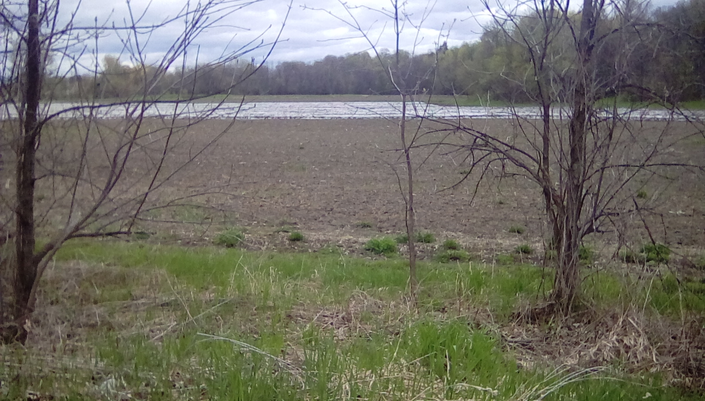

In Blackburn Hamlet, waste management is practically the same for people and companies. The government sends out trucks every week for garbage and every other week for recycling / compost. Most people however keep their compost for their personal garden / general fertilizer. My family currently has two bins that we put our waste foods in and get fertilizer from. As for unusable waste, the city provides each household with both a black bin (Paper) and a blue bin (Plastics). The city also strongly encourages residents and companies to recycle. However, as in most other places many of the companies find it to be too much work and simply throw out all recyclables. As for public areas, I have found that there is generally some amounts of litter but rarely very much. Generally you can find a few bottles if you look (I once found an empty propane tank) but in general there is little litter. Businesses use the same practices as residents, aside from having larger bins.
In Blackburn we also have a few examples of industry, mostly primary. We have the Lafarge quarry that mines gravel and sand with blast mining as well as the Orleans Fruit Farm (not technically in Blackburn but it can be seen from my route.) These companies both produce raw goods and either send them off to be further processed or are sold to the people living in Orleans (mainly the fruit farm for that one). The quarry is reasonably environmentally neutral and other than the effects on the physical environment there is little pollution released by it.
